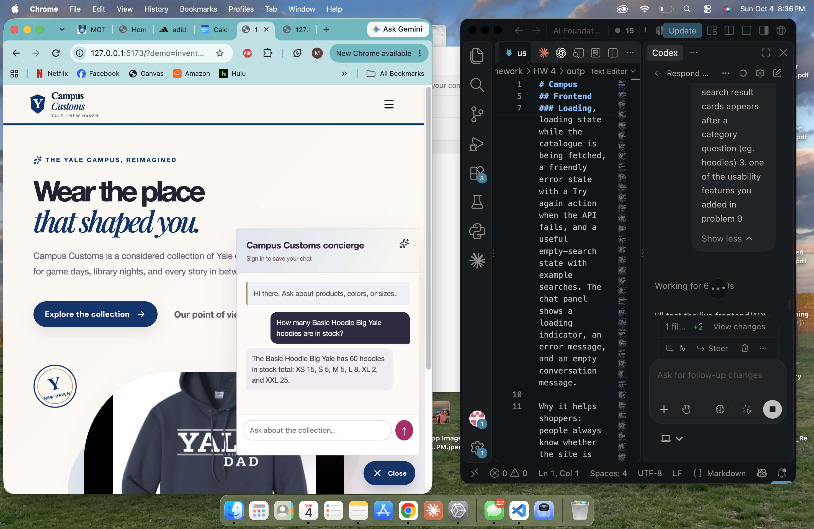
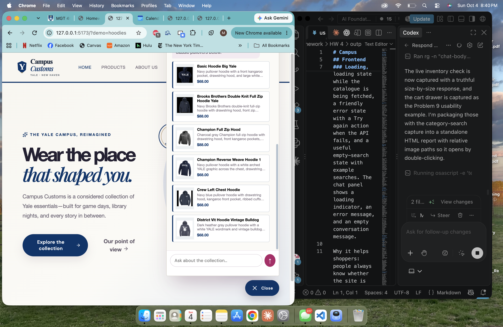
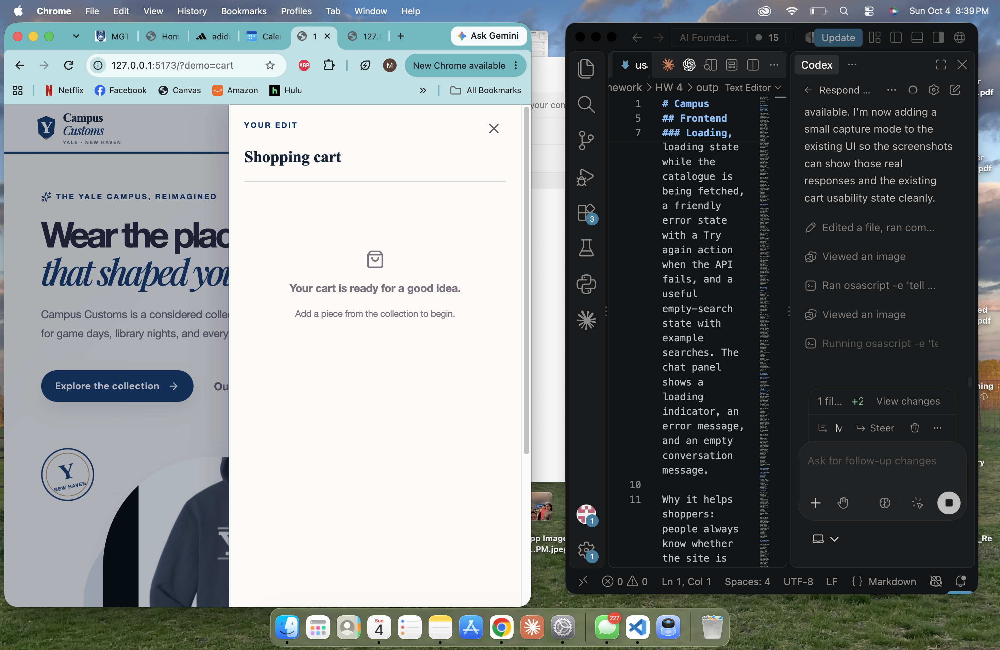

Evidence captured from the running local React + FastAPI app. The first two checks call the live chat API; product prices and inventory are read from data/campus_customs.db.
The shopper asks about Basic Hoodie Big Yale stock. The concierge reports the database-backed total and breaks it down by size: 60 total, with XS 15, S 5, M 5, L 8, XL 2, and XXL 25. No quantity is invented in the UI.

After “What hoodies do you have?”, the agent response supplies structured matches. The chat widget renders six clickable cards with catalogue images, names, descriptions, and database prices; clicking a card uses the same product-detail route as the Products page.

The cart opens as a focused drawer and explains what to do when it is empty. This gives shoppers immediate orientation instead of leaving a blank panel, while keeping the collection visible behind it.
